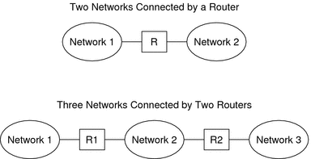
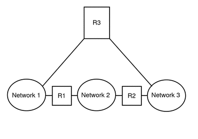
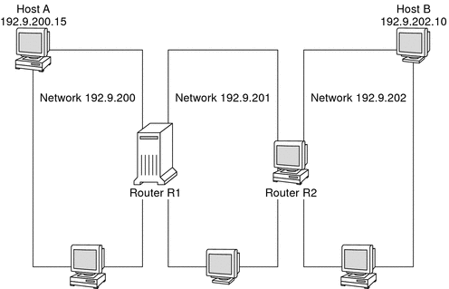

|
|||
|
1. Solaris TCPIP Protocol Suite (Overview) 2. Planning an IPv4 Addressing Scheme (Tasks Determining the Network Hardware Deciding on an IP Addressing Format for Your Network Obtaining Your Network's IP Number Designing an IPv4 Addressing Scheme Naming Entities on Your Network 3. Planning an IPv6 Addressing Scheme (Overview) 4. Planning an IPv6 Network (Tasks) 5. Configuring TCP/IP Network Services and IPv4 Addressing (Tasks) 6. Administering Network Interfaces (Tasks) 7. Enabling IPv6 on a Network (Tasks) 8. Administering a TCP/IP Network (Tasks) 9. Troubleshooting Network Problems (Tasks) 10. TCP/IP and IPv4 in Depth (Reference) 12. About Solaris DHCP (Overview) 13. Planning for DHCP Service (Tasks) 14. Configuring the DHCP Service (Tasks) 15. Administering DHCP (Tasks) 16. Configuring and Administering DHCP Clients 17. Troubleshooting DHCP (Reference) 18. DHCP Commands and Files (Reference) 19. IP Security Architecture (Overview) 21. IP Security Architecture (Reference) 22. Internet Key Exchange (Overview) 24. Internet Key Exchange (Reference) 25. Solaris IP Filter (Overview) 28. Administering Mobile IP (Tasks) 29. Mobile IP Files and Commands (Reference) 30. Introducing IPMP (Overview) 31. Administering IPMP (Tasks) Part VI IP Quality of Service (IPQoS) 32. Introducing IPQoS (Overview) 33. Planning for an IPQoS-Enabled Network (Tasks) 34. Creating the IPQoS Configuration File (Tasks) 35. Starting and Maintaining IPQoS (Tasks) 36. Using Flow Accounting and Statistics Gathering (Tasks) |
Planning for Routers on Your NetworkRecall that in TCP/IP, two types of entities exist on a network: hosts and routers. All networks must have hosts, while not all networks require routers. The physical topology of the network determines if you need routers. This section introduces the concepts of network topology and routing. These concepts are important when you decide to add another network to your existing network environment. Network Topology OverviewNetwork topology describes how networks fit together. Routers are the entities that connect networks to each other. A router is any machine that has two or more network interfaces and implements IP forwarding. However, the system cannot function as a router until properly configured, as described in Configuring an IPv4 Router. Routers connect two or more networks to form larger internetworks. The routers must be configured to pass packets between two adjacent networks. The routers also should be able to pass packets to networks that lie beyond the adjacent networks. The following figure shows the basic parts of a network topology. The first illustration shows a simple configuration of two networks that are connected by a single router. The second illustration shows a configuration of three networks, interconnected by two routers. In the first example, Router R joins Network 1 and Network 2 into a larger internetwork. In the second example, Router R1 connects Networks 1 and 2. Router R2 connects Networks 2 and 3. The connections form a network that includes Networks 1, 2, and 3. Figure 2-3 Basic Network TopologyIn addition to joining networks into internetworks, routers route packets between networks that are based on the addresses of the destination network. As internetworks grow more complex, each router must make more and more decisions about the packet destinations. The following figure shows a more complex case. Router R3 directly connects networks 1 and 3. The redundancy improves reliability. If network 2 goes down, router R3 still provides a route between networks 1 and 3. You can interconnect many networks. However, the networks must use the same network protocols. Figure 2-4 A Network Topology That Provides an Additional Path Between NetworksHow Routers Transfer PacketsThe IP address of the recipient, which is a part of the packet header, determines how the packet is routed. If this address includes the network number of the local network, the packet goes directly to the host with that IP address. If the network number is not the local network, the packet goes to the router on the local network. Routers maintain routing information in routing tables. These tables contain the IP address of the hosts and routers on the networks to which the router is connected. The tables also contain pointers to these networks. When a router receives a packet, the router checks its routing table to determine if the table lists the destination address in the header. If the table does not contain the destination address, the router forwards the packet to another router that is listed in its routing table. Refer to Configuring an IPv4 Router for detailed information on routers. The following figure shows a network topology with three networks that are connected by two routers. Figure 2-5 A Network Topology With Three Interconnected NetworksRouter R1 connects networks 192.9.200 and 192.9.201. Router R2 connects networks 192.9.201 and 192.9.202. If Host A on network 192.9.200 sends a message to Host B on network 192.9.202, the following events occur:
|
||
|